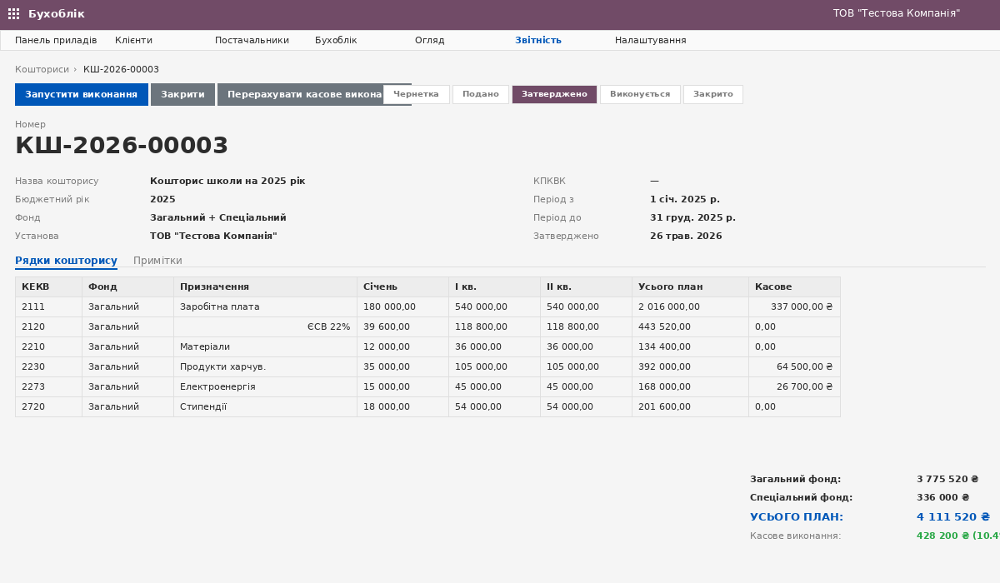

Класифікатори, кошториси, ДКСУ-інтеграція і офіційні форми звітності в одному пакеті. Заміна 1С:БГУ для бюджетних установ.

Кошторис із помісячним розписом по КЕКВ, автоматичним розрахунком квартальних і річних підсумків, касовим виконанням (агрегація з проводок з аналітикою КЕКВ/Фонд).
ЗДО, ЗЗСО, ПТУ, ЗВО. Кошториси, фонди, КПКВК для МОН (220).
ЦПМСД, лікарні. Кошториси + НСЗУ-капітація як одне ціле.
Міські/селищні ради, виконкоми, держустанови всіх рівнів.
Робота з будь-якого пристрою, без VPN до сервера 1С.
LGPL-3 — без vendor lock-in, можна адаптувати під свої потреби.
Автоматична перевірка асигнувань — неможливо проводити понад план (ПКМУ 1608).